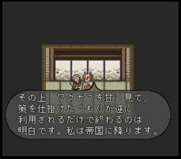
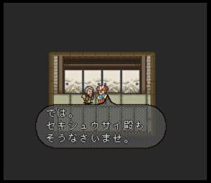
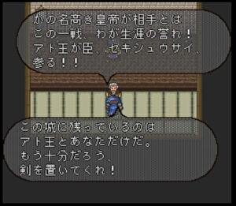
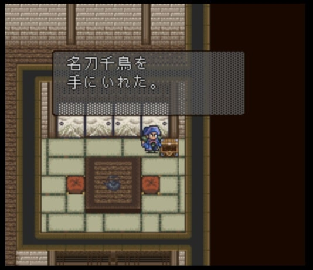
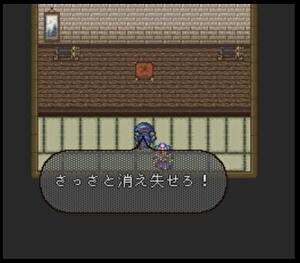
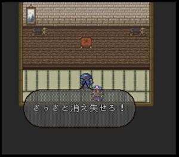
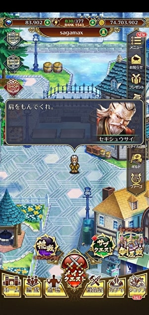

セキシュウサイ
イケおじセキシュウサイ
この記事は、2022年2月にロマサガRSのサガ魂ガチャで実装されたセキシュウサイのことを知ってもらいたくて書いた記事です。セキシュウサイはロマサガ2のNPCで、王に対する忠誠心が強く、武人の中の武人という感じのキャラです。
ロマサガRSで実装されたセキシュウサイは極・雷殺斬という技を持っており、以下の動画のような技です。エフェクトかっこいいですよね！
また、無刀取りというカウンター技も持っています。
無刀取りも雷殺斬も、原作ロマサガ2を知るとなぜセキシュウサイがこの技を持ってきたのかわかると思います。
ここから先では、セキシュウサイが原作ロマサガ2ではどういう人物で、（「極・」はともかく）なぜ雷殺斬、無刀取りという技を持ってきたのか、その背景について書いていこうと思います。
どこにいる？
セキシュウサイはヤウダ地方という場所にいます。下の絵の羽のあるところです。
ヤウダ地方の内部はこんな感じ。セキシュウサイはリャンシャンにいます。ヤウダ地方はハクロ城のワグナスから攻撃を受けています。

セリフから見るセキシュウサイの人柄
以下の画像はリャンシャンのセキシュウサイに話しかけたときのセリフです。ハクロ城の敵（つまりワグナス）に苦戦している様子がうかがえます。
チョントウ城に行くとアト王という人物がいて、以下のような会話になります。アト王はセキシュウサイが仕えている王です。

アト王ちょっとあれですね。。。と思っているとセキシュウサイが説得に入ります。


セキシュウサイの説得も空しく、アト王はワグナスと手を組んで帝国に戦いを仕掛けてきます。
この後リャンシャンに行くとセキシュウサイと会話が始まります。武人らしい人柄がうかがえる会話ですね。
以降、話しかけてもこれしか言いません。
再びチョントウ城へ向かうと、モンスターがわんさかいます。ワグナスと手を組んだのでモンスターがいるんですね。予想通り、アト王はワグナスにいいように利用されているだけのようです。
最深部に行くとセキシュウサイとアト王がいて、会話の後、セキシュウサイと戦うことになります。

無刀取り
セキシュウサイは、無刀取りという技を使用してきます。直接攻撃に対するカウンター技です。これはロマサガ2の世界ではセキシュウサイのみが使える技で、こちらが覚えることはできません。
現実世界においても、無刀取りはセキシュウサイ独自の技です。セキシュウサイは柳生石舟斎という実在した武将をモデルにしたキャラクターです。
石舟斎は、上泉信綱という人物から、武器を持たぬ身で一瞬にして相手の武器を取り上げて敵を制圧する剣技を完成させろという課題を与えられます。刀に頼らず勝を得る究極の技であり、信綱自身も完成させていない剣技でした。
石舟斎は見事にそれを完成させました。それが「無刀取り」です。
ロマサガRSでセキシュウサイが無刀取りを持ってきたのはこの設定に準じています。以下はロマサガRSのセキシュウサイの無刀取りの動画です（エフェクト比較用に再掲）。
参考：
雷殺斬
セキシュウサイに勝つと、稀に「名刀千鳥」をドロップします。
名刀千鳥は実在する刀で、突然降りつけた雷雨の雷を二つに斬ったとされています。雷を斬ってからは名刀千鳥は名刀雷切と呼ばれるようになりました。漫画NARUTOで「雷切」という忍術があったのでこの名前は多くの方が聞いたことがあるでしょう。ロマサガ2の名刀千鳥とNARUTOの雷切は同じ刀に由来しています。
原作では、名刀千鳥は雷殺斬という武器固有技を覚えることができます。以下の動画のようなエフェクトで実装されています。このような逸話があるから使えるようにした技なんでしょうね。
再掲ですが、リユニの極・雷殺斬がこちら。「極・」というだけあって、エライかっこよくなりましたね！セキシュウサイかっこいい！！
まあ名刀千鳥はセキシュウサイからドロップを狙わなくてもチョントウ城の宝箱で手に入るのですが。。。

参考：
散り際
セキシュウサイに勝った後の会話はこんな感じです。最後まで王に対する忠誠心を示して散っていきます。
この後アト王との会話になります。アト王を許す／許さないが選択できますが、セリフがちょっと変わるだけで結果は変わりません。
セキシュウサイに勝った＆アト王を許さない場合
 

セキシュウサイに勝った＆アト王を許す場合
セキシュウサイに負けた場合
セキシュウサイに負けても普通に話を進めることができます。


孫のジュウベイ
セキシュウサイ亡き後、リャンシャンのセキシュウサイがいた場所に行くとイーストガードのジュウベイがいて、仲間にすることができます。

ジュウベイはセキシュウサイの孫と言っていますね。これ実際そうなんです。
先にも書きましたが、セキシュウサイの名前の由来は石舟斎。柳生 宗厳（やぎゅう むねよし）の別名です。柳生流（柳生新陰流）の流祖に位置づけられることもある人らしいです（書いておいてよくわかってない）。
ジュウベイの名前の由来は十兵衞。柳生 三厳（やぎゅう みつよし）の別名で、本当に十兵衞は石舟斎の孫です（柳生 三厳の父は柳生宗矩でその父は柳生宗厳）。
ロマサガRSでSスタイルのジュウベイが雷殺斬を持ってるのはきっとセキシュウサイの意思を引き継いだとかそういうことなのかなと勝手に思っています（ヴィクトールも使えるしたぶん違うけどｗ）。
以上が、ロマサガ2のセキシュウサイというキャラクタの人物像と実装された技の解説になります。この記事で少しでもロマサガRSのセキシュウサイに興味を持ってくれれば幸いです。
参考：
- セキシュウサイ：wikipedia 柳生宗厳
- ジュウベイ：wikipedia 柳生三厳
- ジュウベイの父：wikipedia 柳生宗矩
- wikipedia 柳生新陰流
- ろまさが２人名辞典
おまけ
ヤウダ地方の地図
セキシュウサイがいるヤウダ地方の地図を作ってみました。よかったら見てみてください。
ヤウダ地方の地図へのリンク
ロマサガRSのホーム画面でのセリフ
